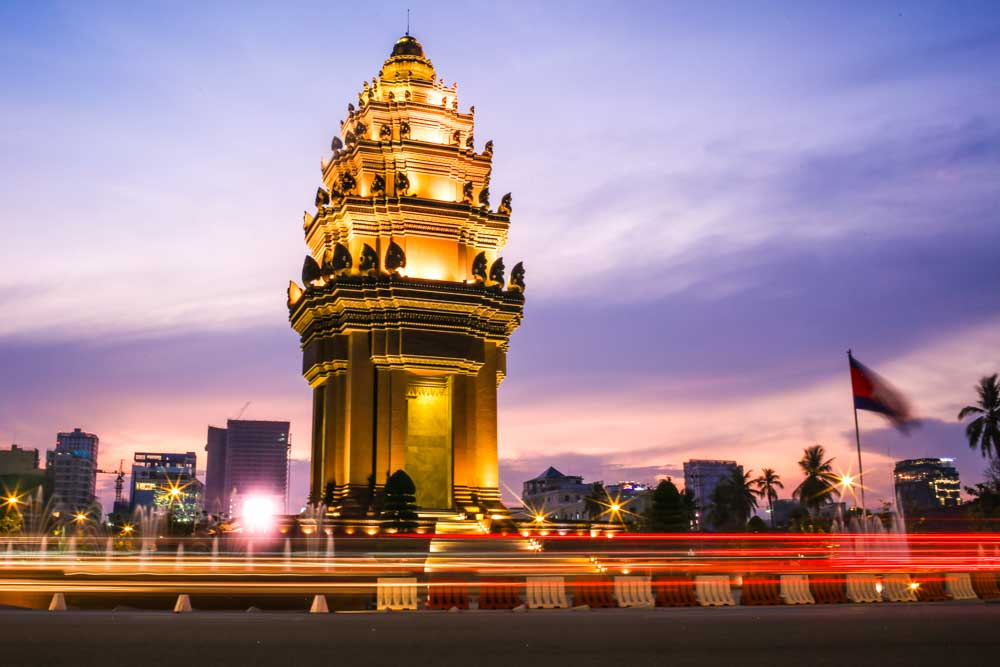
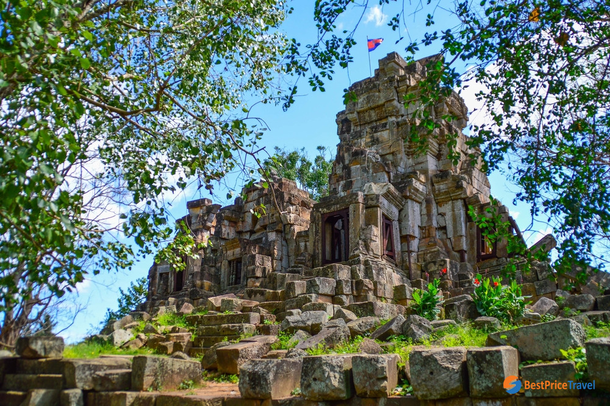
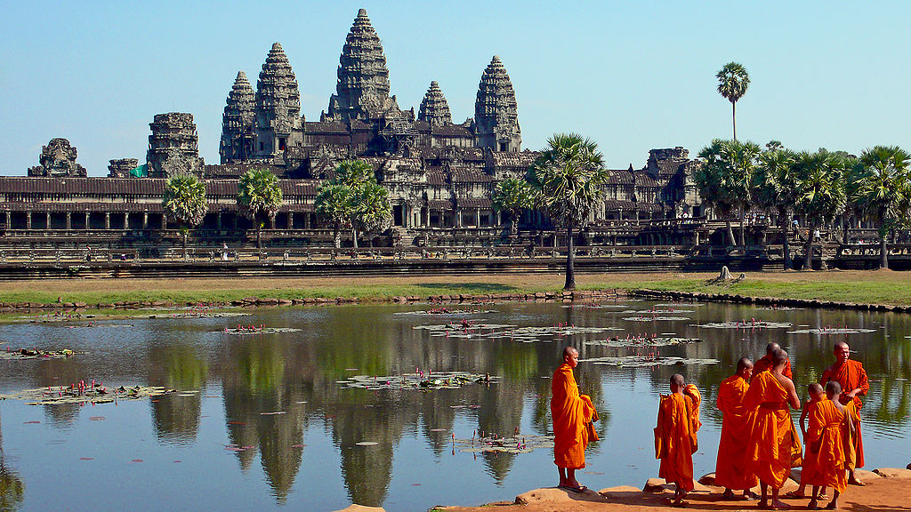
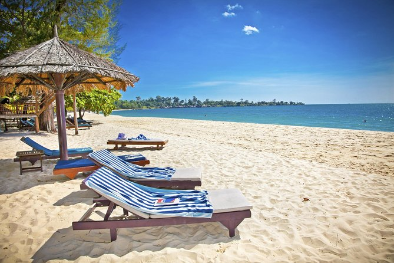
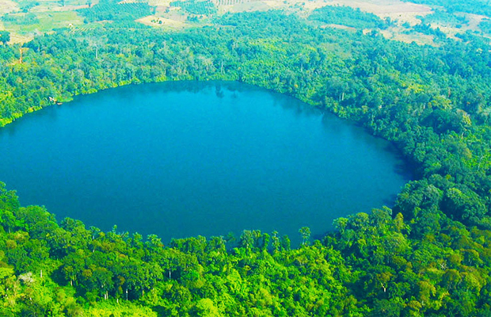

Email: Information@setech.com
Tel: 023880612
| Cambodia Tourism |
Email: Information@setech.com Tel: 023880612 |
|---|
| Home | Booking Hotel | Flight | View Map | Contact Us | About Us |
|---|
|  |
|
Basic History |
|---|

Sieam reapSiem Reap has colonial and Chinese-style architecture in the Old French Quarter... View more |
Kampot cityKampot is a city in southern Cambodia and the capital of Kampot Province.... View more |

Ratanakiri provinceRatanakiri(Khmer: ខេត្តរតនគិរី is a province of northeast Cambodia... View more |
Mondulkiri ProvinceIn 1960 Mondulkiri was created out of Kratié Province by order of King Norodom Sihanouk.... View more |

Sihanoukville (city)The city, which was named in honour of former king Norodom Sihanouk... View more |
Stung Treng ProvinceStung Treng is a province of Cambodia in the northeast.It borders the provinces of... View more |

Battambang ProvinceBattambang was established as an important trading city with around 2,500 residents in.... View more |
Preah Vihear ProvincePreah Vihear is a province (khaet) of Cambodia. It borders the provinces... View more |